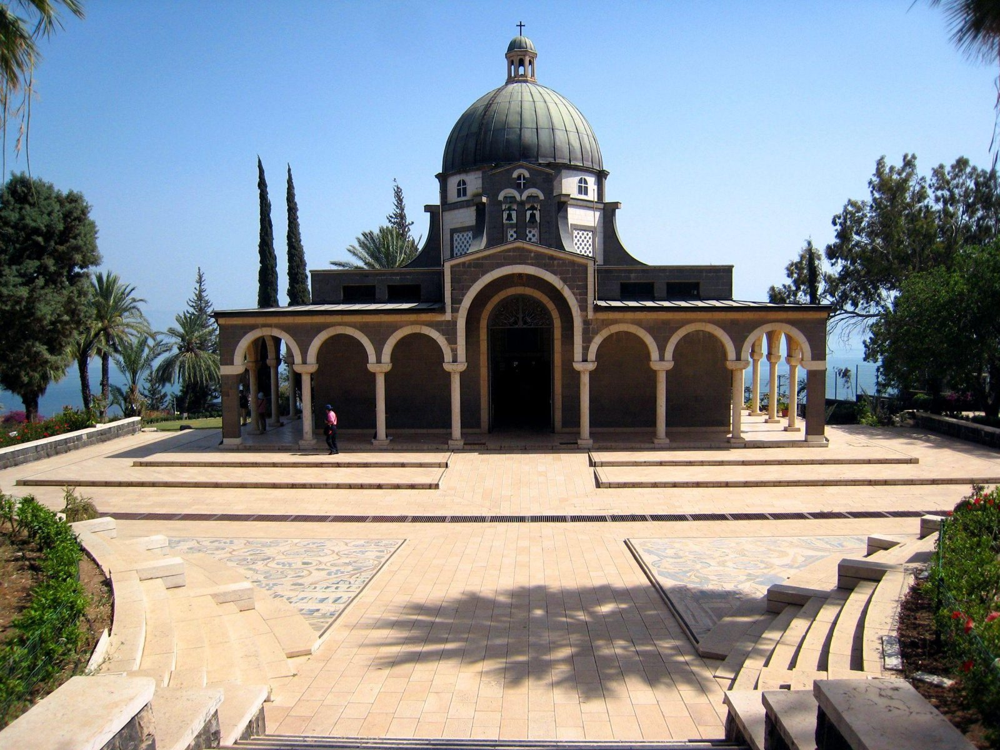

כנסיית הר האושר מעל הכינרת · מצגת התמונות הרשמיתמאפיינים ושיווק · נושא 4
מה הופך את ישראל ליעד שאין לו תחליף: הקדושה לדתות, הנוף והאקלים, הצפרות והחברה. ואיך מחלקים את התיירות לפי המקום שבו היא קורית: בעיר, בכפר ובטבע.
ייחוד הארץ
בגרות 2023
מגוון גדול בשטח קטן: ים ומדבר, הרים, עמקים ומישורים.
והשבר הסורי־אפריקני יוצר מעיינות חמים: חמת גדר, חמי טבריה, ים המלח.
מושג שנשאל 3 פעמים
צפרות היא זיהוי ציפורים ובחינת אורחות חייהן. ישראל היא מוקד עולמי: בכל עונה עוברות בה מאות מינים של ציפורים נודדות.לא במיקוד 2026
לפי הספר מגיעים יותר מ־2,000 צפרים מחו"ל בכל שנה.
כבר נלמד:הנגב 3 · למה ישראל מעניינת צפריםהגליל 1 · אגמון החולה
קדושה לדתות · בגרות 2018
צליינות היא עלייה לרגל של מאמינים למקומות הקדושים לדתם, כדי לקיים מצוות עלייה לרגל ולהתפלל.
ארץ האבות, ירושלים והמקדש. הכותל, מערת המכפלה, קבר רחל, וקברי צדיקים בצפת, בטבריה ובמירון. לצד המניע הדתי יש גם מניע לאומי: יהודי התפוצות באים להתחבר למדינה.
אתרים בחבלים:ירושלים 4 · הר הבית והכותלהגליל 2 · קברי צדיקים
ההשפעה על התיירות: האפיפיור הוא מודל לחיקוי למאמינים. הביקור והסיקור שלו מגדילים את תנועת הצליינים לישראל (מחוון 2018).
נצרות · מושג 2025
הצליין הנוצרי בא בעקבות חיי ישו, בגליל ובירושלים. הזרם שלו קובע לאילו אתרים יגיע ואיזה טקסים יקיים.
| זרם | מה מאפיין אותו | אתרים בולטים |
|---|---|---|
| קתולים | בהנהגת האפיפיור. כנסיות, ניסים ומרים, מיסות. | כנסיית הבשורה בנצרת, כנסיית הקבר |
| פרוטסטנטיםנשאל ב־2025 | הזרם השני בגודלו. נולד מהרפורמציה במאה ה־16 ("פרוטסט" = מחאה). פשטות בפולחן, קשר ישיר לאל בלי כוהן מתווך, והכתובים הם הסמכות העליונה. | גן הקבר, טבילה בירדנית |
| אורתודוקסים | הנצרות המזרחית: מזרח אירופה, רוסיה והמזרח התיכון. | כנסיית העלייה, כנסיית מריה מגדלנה |
האתרים הנוצריים נלמדו:ירושלים 5 · ירושלים הנוצריתהגליל 4 · סובב כינרתהגליל 3 · נצרת
אסלאם · המושג שנשאל הכי הרבה
ירושלים היא העיר השלישית בקדושתה לאסלאם, אחרי מכה ומדינה, בגלל המסע הלילי של מוחמד. מושגי העלייה לרגל באסלאם נשאלו בבגרות חמש פעמים (2018, 2022, 2023, 2024, 2025).
כיפת הסלע (ולא "מסגד עומר") ומסגד אל־אקצא, על הר הבית.
נבי מוסא במדבר יהודה, מערת המכפלה בחברון, נבי צאלח, ונבי שועייב (קדוש לדרוזים).
כבר נלמד:ירושלים 4 · הר הבית
דתות ועדות · מושג 2018, 2021
דת מונותאיסטית שנוסדה בפרס באמצע המאה ה־19 על ידי הבאב, והמשיך אותה בהא־אללה, שהוגלה לעכו. כ־6 מיליון מאמינים.
עקרונות: התנגדות לאלימות, שוויון בין נשים לגברים, חינוך ומדע, וצמצום הפערים בין עניים לעשירים.
האתרים הקדושים: מקדש הבאב והגנים בחיפה (19 טרסות), ובהג'י ליד עכו, שבו קבר בהא־אללה.
מה מציעים לתיירים: אירוח בבתים, היכרות עם התרבות, אתרי מורשת וגלריות, שוק, קטיף, טעימות וסדנאות בישול.
כבר נלמד:מישור החוף 1 · הגנים הבהאייםמישור החוף 2 · הבהאים בחיפההגולן 4 · הכפרים הדרוזיים
מגזרי תיירות · בגרות 2023
העיר עצמה היא מוקד המשיכה. תיירות פסיבית יותר: התייר מתבונן.
אטרקציות תרבות: תיאטרון, קונצרטים, מוזיאונים, גלריות, פסטיבלים, ספורט, אתרים היסטוריים.
סביבות בילוי: פארקים, שווקים, טיילות, חופים, קניונים, מסעדות ומועדונים.
התחדשות עירונית: מבנה ישן מקבל שימוש חדש, כמו מוזיאון ד'אורסיי בפריז, בתחנת רכבת.
לינה ובילוי במרחב לא עירוני: קיבוצים, מושבים וכפרים. צימרים, קטיף, יקבים, רפתות. התפתחה אחרי משבר החקלאות בשנות ה־80, כפרנסה נוספת.
פונה בעיקר לתיירות פנים: משפחות וזוגות שמחפשים שקט ואותנטיות. כדי למשוך תיירות נכנסת צריך סטנדרטים ושיתוף פעולה.
כבר נלמד:ירושלים 1 · ירושלים של ערבהעמקים 1הגליל 2 · תיירות כפרית
מגזרי תיירות · בגרות 2022, 2023
ביקור אחראי ומאוזן באזורי טבע, שבו נשמרת הסביבה. התיירות תורמת לרווחת התושבים המקומיים, ומחנכת: "טיול עם הסביבה ולמען הסביבה". לא כל ביקור בטבע הוא תיירות אקולוגית.
לינה באוהלים מפנקים בטבע ובמרחב פתוח. נחשב תיירות אקולוגית, כי המטרה היא להתחבר לסביבה ולחוות אותה, ולשמור עליה (מחוון 2022).
כמו סיקס סנסס שחרות בערבה: חומרים מקומיים, בידוד בקש, ניצול אור השמש, צמחייה מקומית שחוסכת מים (מחוון 2023).
מושג 34 נלמד:הנגב 3 · תיירות אקולוגיתהנגב 3 · גלמפינג
הרחבה · מהספר
החומר הזה לא נשאל בבגרות. הוא מראה שהמניעים של היום (דת, מרפא, סקרנות ומחקר) היו כאן תמיד.הרחבה
תרגול מהיר · בסטודיו
שאלה פתוחה ומושגים · עונים בסטודיו
שאלות מבגרויות · עונים בסטודיו
מושגים שחוזרים · עונים בסטודיו
סיכום
בנושא הבא: שירותי תיירות.